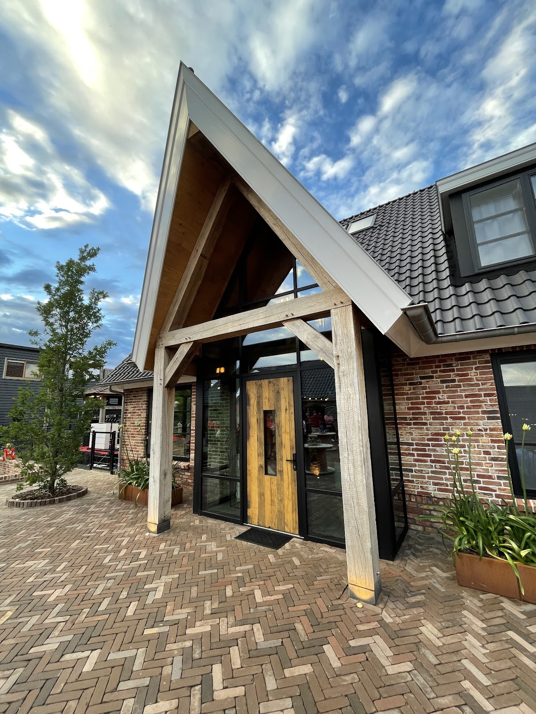
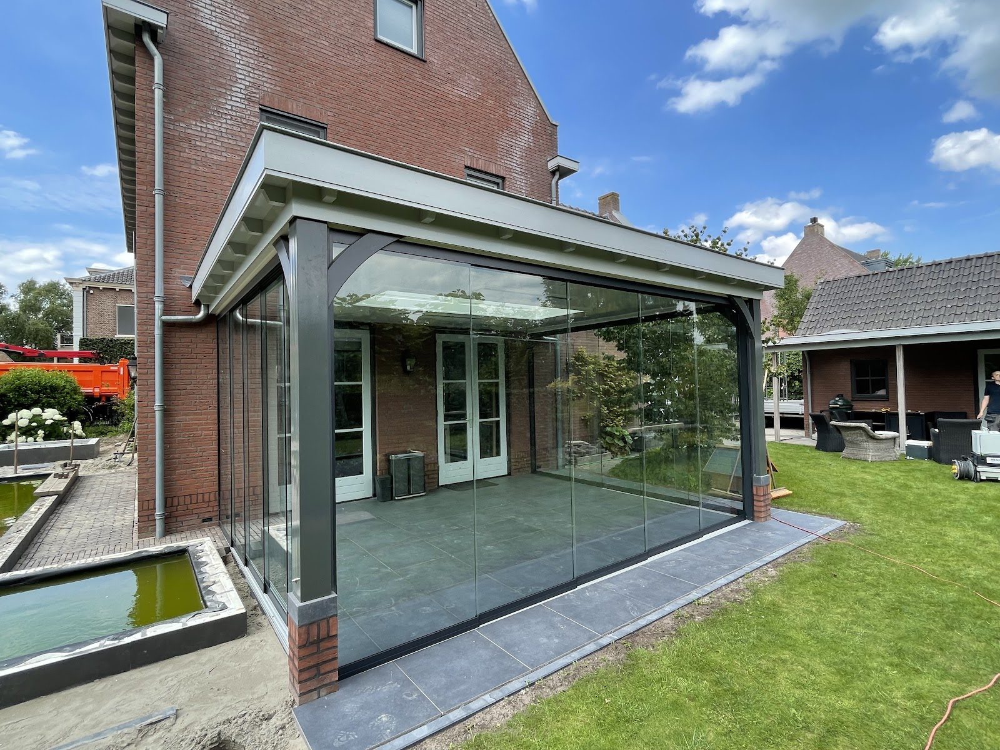
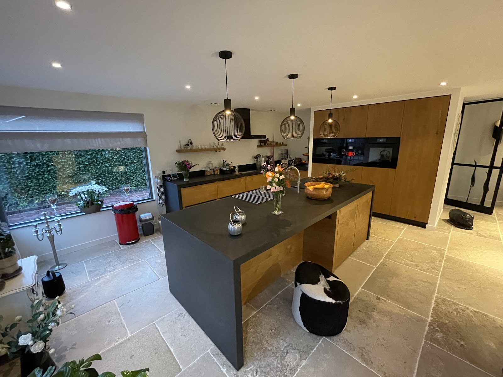
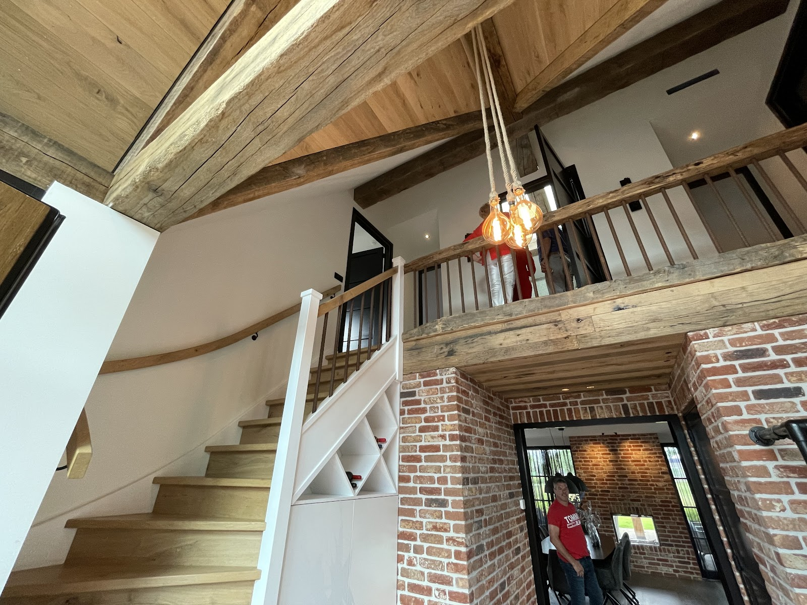
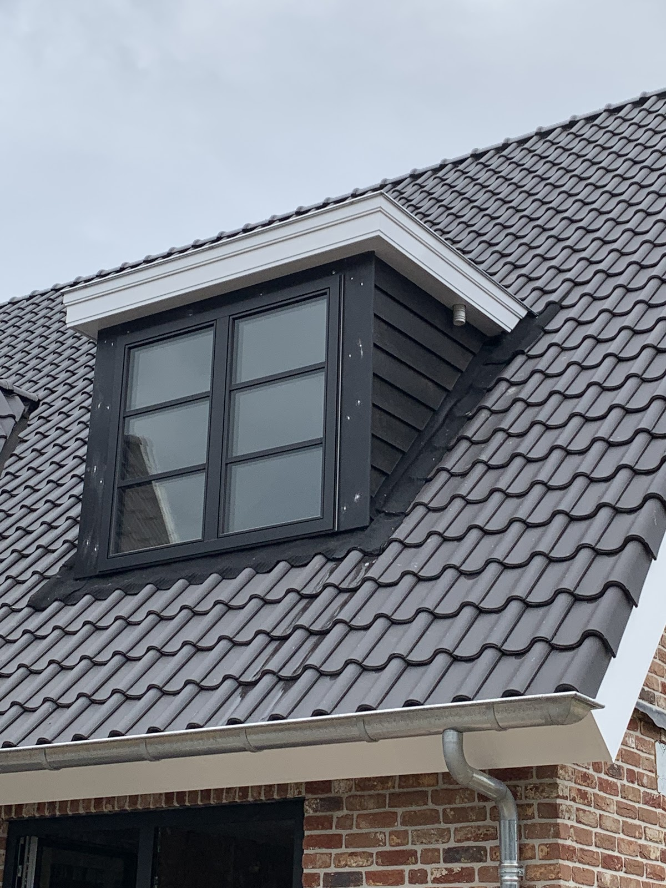
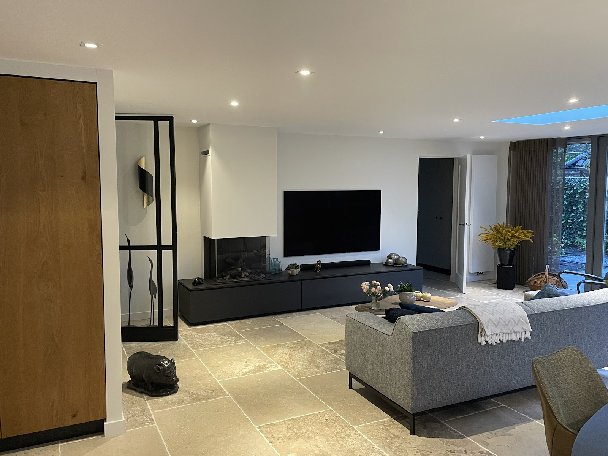
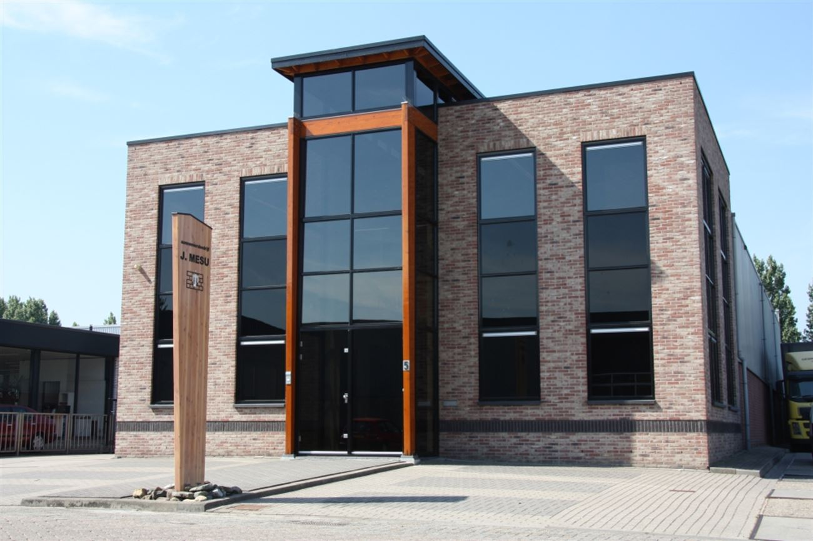

Aannemer in Culemborg
Past als een huis.
Wij bouwen, verbouwen en restaureren. Met kwaliteit, vakmanschap en persoonlijke betrokkenheid, van eerste overleg tot de laatste schroef.
5,0 uit 14 Google-reviews

Werk uit de praktijk
Een tuinkamer met glazen wanden, een keuken op maat, een nieuwe dakkapel. Een greep uit wat wij voor onze opdrachtgevers maakten.





Van fundering tot maatkast
Mesu is actief in de woning- en utiliteitsbouw, restaureert en renoveert, en verzorgt interieurbouw. Nieuwbouw of verbouwing, buiten of binnen: u kunt voor het hele werk bij ons terecht.
-
Woningbouw
Nieuwe woningen, uitbouwen en aanbouwen. Zoals een uitbouw die volledig in de stijl van een huis uit 1910 is gebouwd, of een tuinkamer met lichtstraat.
-
Utiliteitsbouw
Bouwen voor bedrijven en organisaties: bedrijfspanden en kantoren, met dezelfde zorg als een woonhuis.
-
Restauratie
Karakter bewaren waar het kan, herstellen waar het moet. Met respect voor de oorspronkelijke bouw en materialen.
-
Renovatie
Een scheve pui vervangen, een dakkapel vernieuwen, een woning levensbestendig maken. Bij die laatste was het hele traject klaar in de afgesproken tijd.
-
Maatwerk
Interieurbouw die precies past: maatwerkkasten, trappen en afwerking die bij uw huis horen.
Wat klanten zeggen
5,0 uit 14 reviews op Google
"De mannen van Mesu hebben top werk geleverd: een prachtige tuinkamer met een lichtstraat, maatwerk kasten en bovenal een hele fijne samenwerking."
"Aannemersbedrijf Mesu heeft onlangs de pui aan de achterkant van ons huis vervangen. Na 23 jaar stond deze scheef, mede als gevolg van een scheur in de donderdorpel. Nauwkeurig de opmeting gedaan, het ontwerp met materialen in goed overleg en vervolgens in één dag tijd de nieuwe pui geplaatst. Het past als een huis. Su…"
"Mesu heeft voor ons een prachtige uitbouw gerealiseerd, volledig in stijl van ons huis uit 1910. Dankzij de uitstekende werkvoorbereiding werden knelpunten al in een vroeg stadium gesignaleerd en opgelost. Tijdens de bouw werd er actief mee- en vooruitgedacht, was het vakmanschap continu zichtbaar en bleef de bouwplaat…"
"Woning levensbestendig maken, maar ja, altijd spannend zo'n verbouwing. Familieleden en vrienden reageerden niet direct enthousiast: wat kon er allemaal niet misgaan en hoe lang zou dit wel niet gaan duren? Maar Mesu heeft kans gezien het hele traject in de afgesproken tijd af te ronden. Met een heel mooi eindresultaat"
"Vakmanschap! Dakkapel gerenoveerd en het bijna verrotte hout vervangen door kunststof panelen. De werknemers van Mesu weten wat ze doen, signaleren zaken en alles wordt opeenvolgend opgelost. Kortom; geweldige aannemer, personeel en hier een tevreden klant."
Gewoon aan de Plantijnweg
Aannemersbedrijf J. Mesu werkt vanuit Culemborg. Voor kwaliteit, vakmanschap en persoonlijke betrokkenheid bent u bij ons aan het juiste adres.
Wat klanten in hun reviews steeds noemen:
- Goede voorbereiding
- Knelpunten vroeg gezien en opgelost.
- Meedenken
- Ontwerp en materialen in goed overleg.
- Op tijd klaar
- Afgerond in de afgesproken tijd.

Plannen? Bel ons.
Vertel ons wat u wilt bouwen of verbouwen. We denken graag mee, ook als het idee nog niet af is.
0345 513 395- info@mesubouw.nl
- Openingstijden
-
Maandag t/m vrijdag 07:00 tot 17:00 Zaterdag en zondag Gesloten